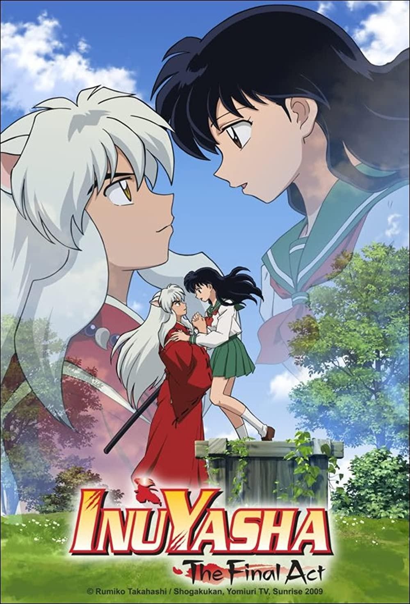

Home
Welcome to the main page of my website! The topic I have chosen is my favourite hobby.
My favorite pastime is watching/reading anime and webtoons. I personally like to keep up with multiple at a time. I would say I watch and read at least 15 anime or webtoons at a time. Although that may seem like a lot, I enjoy looking forward to the next episode or chapter every week.
This website will talk about what anime and webtoons are, my current watch/read list, a list of some of my favourites, and a list of the ones I have watched or read before. I hope you enjoy it and that you may find something of interest to you.
Now you may be wondering, what is an anime or webtoon?
Let's start off with anime. An anime is a Japanese animated show. Anime literally means animation in Japanese. There are many genres when it comes to anime. For example there is action, romance, fantasy, cooking, comedy, isekai, etc. I got introduced to anime at a very young age, around three years old. If I remember correctly, some of the first anime I watched as a kid were Bleach, Inuyasha, and Pokemon.



Next let’s talk about what a webtoon is. Webtoons are digital comics that are usually read in a vertical scrolling format. Just like with anime there are many genres to choose from such as romance, fantasy, drama, and many others. I started reading webtoons around six years ago. I’ve probably read hundreds of different webtoons by now. Some of the first webtoons I read were Who Made Me a Princess, Inso's Law, and Villains Are Destined to Die. A majority of the webtoons on this site can be read for free on an app called WEBTOON.